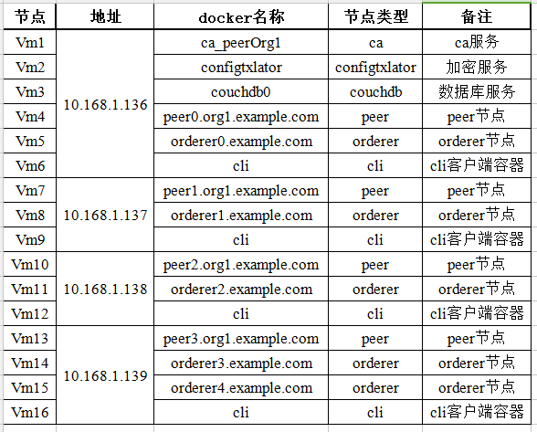

安装步骤：1. yum-utils提供yum-config-manager工具，设备映射存储驱动需要device-mapper-persistent-data和lvm2工具# yum install -y yum-utils device-mapper-persistent-data lvm22. 设置稳定存储库# yum-config-manager --add-repo https://download.docker.com/linux/centos/docker-ce.repo3. 开启edge# yum-config-manager --enable docker-ce-edge4. 开启test# yum-config-manager --enable docker-ce-test5. 安装docker-ce# yum install docker-ce6. 运行docker# systemctl start docker7. 查看docker版本，判断是否安装成功# docker -version8. 设置开机自启动# chkconfig docker on
安装步骤：1. 下载最新版本docker-compose到/usr/local/bin/docker-compose目录下# curl -L https://github.com/docker/compose/releases/download/1.22.0/docker-compose-$(uname -s)-$(uname -m) -o /usr/local/bin/docker-compose2. 设置/usr/local/bin/docker-compose目录为可执行权限# chmod +x /usr/local/bin/docker-compose3. 测试docker-compose安装是否成功# docker-compose -version
安装步骤：1. 下载并安装GO语言环境# cd /opt# mkdir golang# cd golang# yum install wget# wget https://studygolang.com/dl/golang/go1.10.3.linux-amd64.tar.gz# tar -zxvf go1.10.3.linux-amd64.tar.gz2. 配置GO语言环境变量# vi /etc/profile添加如下内容到/etc/profile后面export GOPATH=/opt/gopathexport GOROOT=/opt/golang/goexport PATH=$GOROOT/bin:$PATH# source /etc/profile3. 查看GO语言版本# go version4. 查看GO语言环境变量# go env
# yum install git
1. [Git安装]安装步骤：1） 生成目录# mkdir -p $GOPATH/src/github.com/hyperledger/# cd $GOPATH/src/github.com/hyperledger/2） Git克隆源码# git clone https://github.com/hyperledger/fabric.git# cd fabric3） 切换Fabric版本# git checkout v1.4.32. [手动安装]访问github网站并下载Fabric，地址为：https://github.com/hyperledger/fabric/tree/v1.4.3，然后拷贝到$GOPATH/src/github.com/hyperledger/这个目录下面。
-# docker pull hyperledger/fabric-peer:latest-# docker pull hyperledger/fabric-orderer:latest-# docker pull hyperledger/fabric-tools:latest-# docker pull hyperledger/fabric-ccenv:latest-# docker pull hyperledger/fabric-baseos:latest-# docker pull hyperledger/fabric-kafka:latest-# docker pull hyperledger/fabric-zookeeper:latest-# docker pull hyperledger/fabric-couchdb:latest-# docker pull hyperledger/fabric-ca:latest
# mkdir -p /etc/docker# tee /etc/docker/daemon.json <<-'EOF'{"registry-mirrors": ["https://8w1wqmsz.mirror.aliyuncs.com"]}EOF# systemctl daemon-reload# systemctl restart docker
基于Raft共识算法搭建多机Fabric1.4.3网络在fabric1.4.3的版本中，提供了基于raft共识的raft排序服务。raft的模型可以容忍奔溃，如果有节点故障掉线可以正常运行。前提是要有大多数存活，也就是要保证1/2以上的节点个数正常运行。raft共识是“主从模型”，主节点通过动态选举决定，从节点是主节点的复制。raft排序服务比kafka排序服务易于设置和管理。并且raft的设计允许不同的组织贡献节点来共同组成排序服务。raft排序是fabric实现拜占庭容错排序服务的第⼀步，如我们所见，开发raft排序服务的决定也是基于此的。raft节点之间通过使⽤用TLS认证身份，如果一个攻击者想要伪造raft节点，就必须要获得⼀个有效的证书和对应的私钥。所以，没有⼀个有效的TLS证书，是不可能运行raft节点的。 要使用raft共识，需要修改两个地⽅：1. 本地配置：用来控制节点的特性，例例如TLS配置，备份个数和⽂文件存储。2. 通道配置：用来定义raft集群的成员关系，以及raft协议相关的参数，例例如⼼心跳间隔、leader节点超时时间等。3. 需要注意的是，每个channel有属于它⾃己的raft集群。因此，在chennel中要指定raft节点，指定的方式是把raft节点的tls证书配置到channel的配置文件中。在系统通道和应用通道中的配置中，每个排序以consenter的形式列出来。下⾯有configtx.yaml中关于raft节点的配置。4. 必须开启TLS才能使用Raft排序
在本次基于Raft共识搭建的fabric1.4.3网络环境中，准备搭建五个orderer节点、一个组织四个peer,一个CouchDB和一个fabric-ca.这里要说明一下，raft共识中同步的节点必须为奇数，因为在整个共识环境中每个节点都是follower，当他们感受到网络中没有leader节点向他们发送heartbeat的时候，他们就会变成candidater，这时候需要他们之间相互投票才能将自己由candidater变成leader，达成一致的过程需要整个网络中有n/2+1个节点达成一致，整个网络才会达成一致，所以需要奇数个同步节点，在leader选举出来之后通过leader与客户端交互，将本地的log同步到各个follower。

因为在四台虚拟机的项目目录必须一样，所以在四台虚拟机的/opt/gopath/src/github.com/hyperledger/fabric目录下执行相同的命令mkdir raft-example来创建项目目录,并进入项目目录。1.第一台虚拟机：10.168.1.136(1)在项目目录中执行命令vim crypto-config.yaml,并编辑文件内容，生成yaml文件。(2)执行命令cryptogen generate --config ./crypto-config.yaml生成各个节点的证书。(3)执行命令vim configtx.yaml，并编辑文件内容，生成yaml文件。(4)执行命令mkdir channel-artifacts创建文件夹，用来保存通过yaml文件以及系统通道生成的创世块文件。(5)执行命令configtxgen -profile TwoOrgsOrdererGenesis -channelID systemchannel -outputBlock ./channel-artifacts/genesis.block生成系统文件的创世块。(6)执行命令configtxgen -profile TwoOrgsChannel -outputCreateChannelTx ./channel-artifacts/evtpchannel.tx -channelID evtpchannel生成用于创建应用通道的通道文件(7)接着将整个项目目录raft-example中的文件拷贝到其他的三台虚拟机上，在其他三台虚拟机的项目目录下执行命令。#scp -r raft-example root@10.168.1.137:/opt/gopath/src/github.com/hyperledger/fabric#scp -r raft-example root@10.168.1.138:/opt/gopath/src/github.com/hyperledger/fabric#scp -r raft-example root@10.168.1.139:/opt/gopath/src/github.com/hyperledger/fabric(8)执行命令vi docker-compose-orderer.yaml,并编辑文件内容，生成yaml文件。(9)执行命令vi docker-compose-peer.yaml，并编辑文件内容，生成yaml文件。(10)执行命令vi docker-compose-cli.yaml,并编辑文件内容，生成yaml文件。(11)执行命令vi docker-compose-couchdb0.yaml,并编辑文件内容，生成yaml文件。(12)执行命令vi docker-compose-ca.yaml,并编辑文件内容，生成yaml文件。
后边三台服务器参考前面这台服务器配置相应节点。各个主机进行交互时，主机名的解析会影响交互速度，所以我们在/etc/hosts中将ip与主机名绑定起来，执行vi /etc/hosts.添加ip和主机名对应列表。配置完成后使用docker-compose创建docker容器并运行：例如:docker-compose -f ../docker-compose-orderer.yaml up -d编写sdk和智能合约(区块链应用)